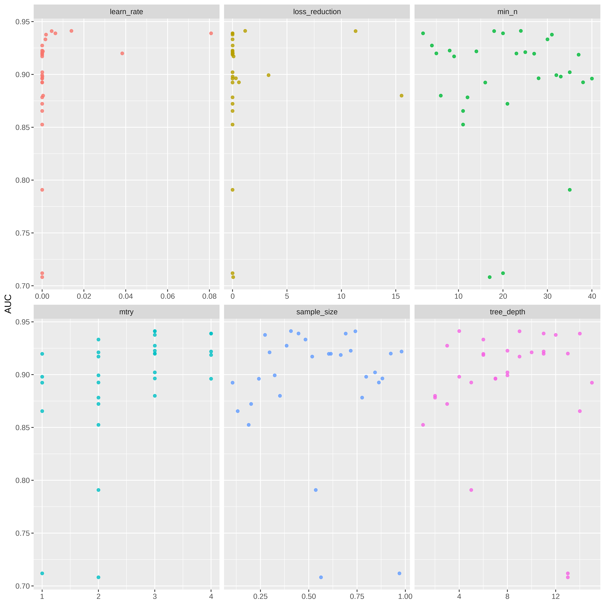
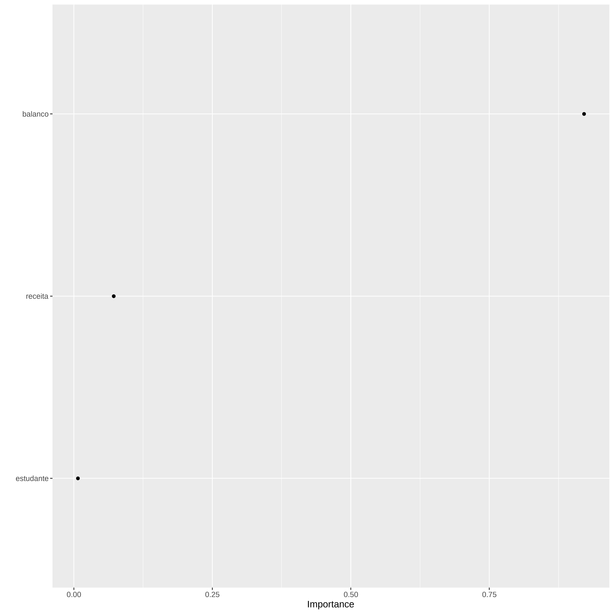
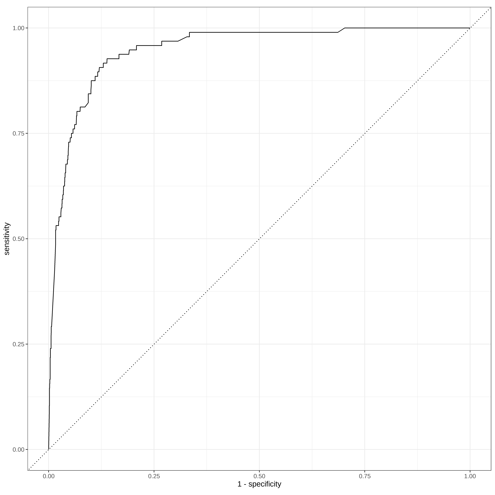

Arvores de Classificação - XGboost no Tidymodels
Bibliotecas
Dados
default student balance income
No :9667 No :7056 Min. : 0.0 Min. : 772
Yes: 333 Yes:2944 1st Qu.: 481.7 1st Qu.:21340
Median : 823.6 Median :34553
Mean : 835.4 Mean :33517
3rd Qu.:1166.3 3rd Qu.:43808
Max. :2654.3 Max. :73554 str(Default)'data.frame': 10000 obs. of 4 variables:
$ default: Factor w/ 2 levels "No","Yes": 1 1 1 1 1 1 1 1 1 1 ...
$ student: Factor w/ 2 levels "No","Yes": 1 2 1 1 1 2 1 2 1 1 ...
$ balance: num 730 817 1074 529 786 ...
$ income : num 44362 12106 31767 35704 38463 ...head(Default) default student balance income
1 No No 729.5265 44361.625
2 No Yes 817.1804 12106.135
3 No No 1073.5492 31767.139
4 No No 529.2506 35704.494
5 No No 785.6559 38463.496
6 No Yes 919.5885 7491.559Manipulando os dados
default student balance income
No :9667 No :7056 Min. : 0.0 Min. : 772
Yes: 333 Yes:2944 1st Qu.: 481.7 1st Qu.:21340
Median : 823.6 Median :34553
Mean : 835.4 Mean :33517
3rd Qu.:1166.3 3rd Qu.:43808
Max. :2654.3 Max. :73554 # renomeando colunas
credito <- credito %>%
rename( inadimplente = default, estudante = student, balanco = balance,
receita = income)
credito <- credito %>% mutate( inadimplente = case_when(
inadimplente == "No" ~ "Nao",
inadimplente == "Yes" ~ "Sim"
)) %>% mutate(inadimplente = factor(inadimplente))
credito <- credito %>% mutate( estudante = case_when(
estudante == "No" ~ 0,
estudante == "Yes" ~ 1
))
str(credito)tibble [10,000 × 4] (S3: tbl_df/tbl/data.frame)
$ inadimplente: Factor w/ 2 levels "Nao","Sim": 1 1 1 1 1 1 1 1 1 1 ...
$ estudante : num [1:10000] 0 1 0 0 0 1 0 1 0 0 ...
$ balanco : num [1:10000] 730 817 1074 529 786 ...
$ receita : num [1:10000] 44362 12106 31767 35704 38463 ...summary(credito) inadimplente estudante balanco receita
Nao:9667 Min. :0.0000 Min. : 0.0 Min. : 772
Sim: 333 1st Qu.:0.0000 1st Qu.: 481.7 1st Qu.:21340
Median :0.0000 Median : 823.6 Median :34553
Mean :0.2944 Mean : 835.4 Mean :33517
3rd Qu.:1.0000 3rd Qu.:1166.3 3rd Qu.:43808
Max. :1.0000 Max. :2654.3 Max. :73554 Treino e Teste
library(tidymodels)
set.seed(2024)
dados_split <- initial_split(credito, strata = inadimplente)
conj_treino <- training(dados_split)
conj_teste <- testing(dados_split)Treinando
## 1a tentativa Xgboost
xgb_spec <- boost_tree(
trees = 1000,
tree_depth = tune(), min_n = tune(),
loss_reduction = tune(), ## first three: model complexity
sample_size = tune(), mtry = tune(), ## randomness
learn_rate = tune() ## step size
) %>%
set_engine("xgboost") %>%
set_mode("classification")
xgb_specBoosted Tree Model Specification (classification)
Main Arguments:
mtry = tune()
trees = 1000
min_n = tune()
tree_depth = tune()
learn_rate = tune()
loss_reduction = tune()
sample_size = tune()
Computational engine: xgboost xgb_grid <- grid_latin_hypercube(
tree_depth(),
min_n(),
loss_reduction(),
sample_size = sample_prop(),
finalize(mtry(), conj_treino),
learn_rate(),
size = 30
)
xgb_grid# A tibble: 30 × 6
tree_depth min_n loss_reduction sample_size mtry learn_rate
<int> <int> <dbl> <dbl> <int> <dbl>
1 8 32 3.30e+ 0 0.324 2 1.61e- 5
2 14 11 1.14e- 7 0.132 1 8.04e-10
3 13 5 1.36e- 2 0.924 3 3.83e- 2
4 6 37 3.22e- 6 0.666 4 2.75e- 5
5 1 11 4.68e- 9 0.189 2 6.81e- 9
6 13 17 5.55e- 2 0.563 2 1.11e-10
7 15 16 1.74e-10 0.106 1 2.35e- 8
8 3 4 3.68e- 3 0.385 3 5.14e- 6
9 8 35 4.34e- 5 0.843 3 6.70e- 5
10 13 20 3.07e- 4 0.969 1 4.09e-10
# ℹ 20 more rows══ Workflow ════════════════════════════════════════════════════════════════════
Preprocessor: Formula
Model: boost_tree()
── Preprocessor ────────────────────────────────────────────────────────────────
inadimplente ~ .
── Model ───────────────────────────────────────────────────────────────────────
Boosted Tree Model Specification (classification)
Main Arguments:
mtry = tune()
trees = 1000
min_n = tune()
tree_depth = tune()
learn_rate = tune()
loss_reduction = tune()
sample_size = tune()
Computational engine: xgboost set.seed(2024)
vb_folds <- vfold_cv(conj_treino, v = 5, strata = inadimplente)
vb_folds# 5-fold cross-validation using stratification
# A tibble: 5 × 2
splits id
<list> <chr>
1 <split [6000/1500]> Fold1
2 <split [6000/1500]> Fold2
3 <split [6000/1500]> Fold3
4 <split [6000/1500]> Fold4
5 <split [6000/1500]> Fold5doParallel::registerDoParallel()
set.seed(2024)
xgb_res <- tune_grid(
xgb_wf,
resamples = vb_folds,
grid = xgb_grid,
control = control_grid(save_pred = TRUE)
)
xgb_res# Tuning results
# 5-fold cross-validation using stratification
# A tibble: 5 × 5
splits id .metrics .notes .predictions
<list> <chr> <list> <list> <list>
1 <split [6000/1500]> Fold1 <tibble [90 × 10]> <tibble [0 × 3]> <tibble>
2 <split [6000/1500]> Fold2 <tibble [90 × 10]> <tibble [0 × 3]> <tibble>
3 <split [6000/1500]> Fold3 <tibble [90 × 10]> <tibble [0 × 3]> <tibble>
4 <split [6000/1500]> Fold4 <tibble [90 × 10]> <tibble [0 × 3]> <tibble>
5 <split [6000/1500]> Fold5 <tibble [90 × 10]> <tibble [0 × 3]> <tibble> xgb_res %>% collect_metrics()# A tibble: 90 × 12
mtry min_n tree_depth learn_rate loss_reduction sample_size .metric
<int> <int> <int> <dbl> <dbl> <dbl> <chr>
1 2 32 8 1.61e- 5 3.30 0.324 accuracy
2 2 32 8 1.61e- 5 3.30 0.324 brier_class
3 2 32 8 1.61e- 5 3.30 0.324 roc_auc
4 1 11 14 8.04e-10 0.000000114 0.132 accuracy
5 1 11 14 8.04e-10 0.000000114 0.132 brier_class
6 1 11 14 8.04e-10 0.000000114 0.132 roc_auc
7 3 5 13 3.83e- 2 0.0136 0.924 accuracy
8 3 5 13 3.83e- 2 0.0136 0.924 brier_class
9 3 5 13 3.83e- 2 0.0136 0.924 roc_auc
10 4 37 6 2.75e- 5 0.00000322 0.666 accuracy
# ℹ 80 more rows
# ℹ 5 more variables: .estimator <chr>, mean <dbl>, n <int>, std_err <dbl>,
# .config <chr>xgb_res %>%
collect_metrics() %>%
filter(.metric == "roc_auc") %>%
select(mean, mtry:sample_size) %>%
pivot_longer(mtry:sample_size,
values_to = "value",
names_to = "parameter"
) %>%
ggplot(aes(value, mean, color = parameter)) +
geom_point(alpha = 0.8, show.legend = FALSE) +
facet_wrap(~parameter, scales = "free_x") +
labs(x = NULL, y = "AUC")
melhor_auc <- select_best(xgb_res)final_xgb <- finalize_workflow(
xgb_wf,
melhor_auc
)
final_xgb══ Workflow ════════════════════════════════════════════════════════════════════
Preprocessor: Formula
Model: boost_tree()
── Preprocessor ────────────────────────────────────────────────────────────────
inadimplente ~ .
── Model ───────────────────────────────────────────────────────────────────────
Boosted Tree Model Specification (classification)
Main Arguments:
mtry = 3
trees = 1000
min_n = 24
tree_depth = 4
learn_rate = 0.0139744688194663
loss_reduction = 1.15404948868465
sample_size = 0.407858160007745
Computational engine: xgboost 
final_res <- last_fit(final_xgb, dados_split)
collect_metrics(final_res)# A tibble: 3 × 4
.metric .estimator .estimate .config
<chr> <chr> <dbl> <chr>
1 accuracy binary 0.966 Preprocessor1_Model1
2 roc_auc binary 0.948 Preprocessor1_Model1
3 brier_class binary 0.0257 Preprocessor1_Model1final_res %>%
collect_predictions() %>%
roc_curve(truth=inadimplente, .pred_Sim, event_level = "second") %>%
autoplot()
mat_conf <- final_res %>%
collect_predictions() %>%
conf_mat(truth = inadimplente, estimate = .pred_class, event_level = "second")
summary(mat_conf)# A tibble: 13 × 3
.metric .estimator .estimate
<chr> <chr> <dbl>
1 accuracy binary 0.966
2 kap binary 0.377
3 sens binary 0.994
4 spec binary 0.281
5 ppv binary 0.972
6 npv binary 0.643
7 mcc binary 0.411
8 j_index binary 0.275
9 bal_accuracy binary 0.638
10 detection_prevalence binary 0.983
11 precision binary 0.972
12 recall binary 0.994
13 f_meas binary 0.983